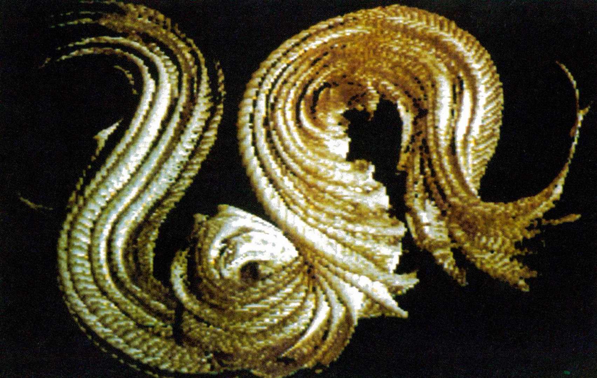

The Drawing Prism
An optical bridge between real brushes and digital pixels — paint directly into a computer with your hands.

Overview
The Drawing Prism is an optical direct-drawing computer input device presented by Richard Greene at SIGGRAPH 1985. It uses a large transparent prism as a drawing surface. A video camera underneath views the surface at an angle where it can only image the points of optical contact between drawing tools and the surface — a principle known as frustrated total internal reflection (FTIR). A layer of transparent liquid helps tools make optical contact. The camera output is digitized and processed in real time, building up a drawing in the frame buffer as the artist moves tools along the surface. Any light-colored object — brushes, fingers, palette knives — can be used. The result is a device that bridges traditional artistic technique with digital image creation, allowing continuously adjustable line qualities, textures, and effects that conventional computer input devices of the era could not produce.
Deep dive
Richard Greene developed the Drawing Prism to solve a specific problem: artists using computer graphic input devices could not produce the same visual effects achievable with traditional tools and media. The device uses one face of a large transparent prism as a drawing surface. A video camera views that surface from below at an angle such that it can only image points of optical contact — where a drawing tool touches the surface, it frustrates the total internal reflection, creating a visible point of light. These images are digitized and processed in real time, building up a drawing. The user sees the accumulating image on a monitor. A layer of transparent liquid (such as mineral oil) between the tool and the glass ensures reliable optical contact. The device was presented at SIGGRAPH 1985 in San Francisco.
The artist works on the glass surface with any light-colored object: traditional brushes, their fingers, a rag for smudging, a palette knife. The system sees where and how hard the tool presses based on the size and intensity of the contact point. Unlike a graphics tablet, there is no stylus — the artist's actual brushwork is captured directly. Line width, opacity, and texture vary naturally with tool pressure, angle, and speed, exactly as in traditional painting. The artist sees the result accumulating on a monitor as they work on the glass. This creates a unique feedback loop: the physical sensation of brush-on-glass corresponds directly to marks appearing on screen. The paper describes combinations of visual effects 'previously restricted to either traditional media or computer graphics.'
The system uses a transparent prism with a video camera positioned underneath, viewing the drawing surface at an angle that exploits frustrated total internal reflection. Light-colored objects in optical contact with the surface appear as bright spots against a dark background. A real-time digitizer processes the camera signal and writes to a frame buffer. The SIGGRAPH paper details the optical geometry, the choice of camera (RCA TC 2000 series), and suggestions for improving resolution. Greene notes that Robert E. Mueller was awarded U.S. Patent #3,846,826 in 1974 for a similar FTIR-based direct drawing system using a flying-spot scanner and photomultiplier instead of a camera — an independent prior invention using the same optical principles.
The Drawing Prism anticipated FTIR-based multi-touch screens by roughly 20 years — the same optical principle underlies many modern multi-touch tables and interactive surfaces. The idea of painting directly into a computer with real brushes predates digital painting tablets (Wacom) and multi-touch drawing apps by decades. A live performance using the Drawing Prism, 'Technological Feets' by Javril, Tannenbaum, Greene, and Schier, was presented at the SIGGRAPH '84 Electronic Theater. Ed Tannenbaum also used the technology in a permanent exhibit at the Exploratorium in San Francisco (1982). The work bridges HCI, computer graphics, and fine art in a way that few devices from any era do.
Team & pioneers
- Richard Greene. Inventor and author of the SIGGRAPH 1985 paper
- Ed Tannenbaum. Artist who used the Drawing Prism technology in Exploratorium exhibit and SIGGRAPH '84 performance
- Robert E. Mueller. Awarded U.S. Patent #3,846,826 (1974) for a prior FTIR-based direct drawing system using different hardware
Media
Sources
- ACM Digital Library: Greene, 'The Drawing Prism: A Versatile Graphic Input Device', SIGGRAPH 1985
- SIGGRAPH History Archive: The Drawing Prism paper entry with abstract and references
- U.S. Patent #3,846,826: Mueller, 'Direct Television Drawing and Image Manipulating System' (1974) — prior FTIR art
- SIGGRAPH '84 Electronic Theater: 'Technological Feets' by Javril, Tannenbaum, Greene, Schier (live FTIR performance)